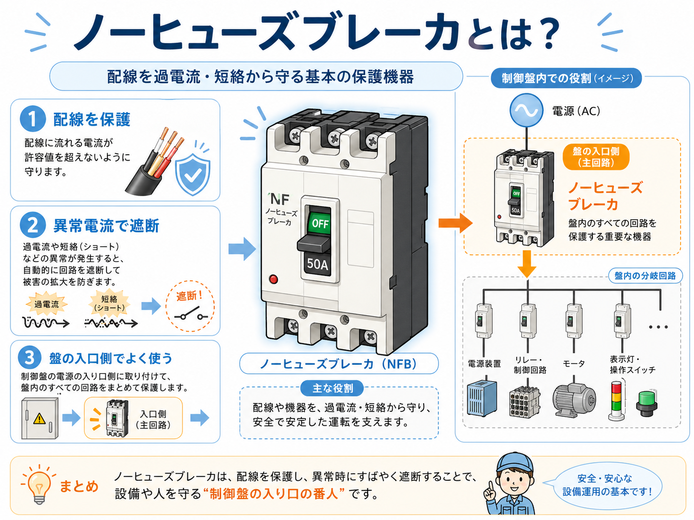
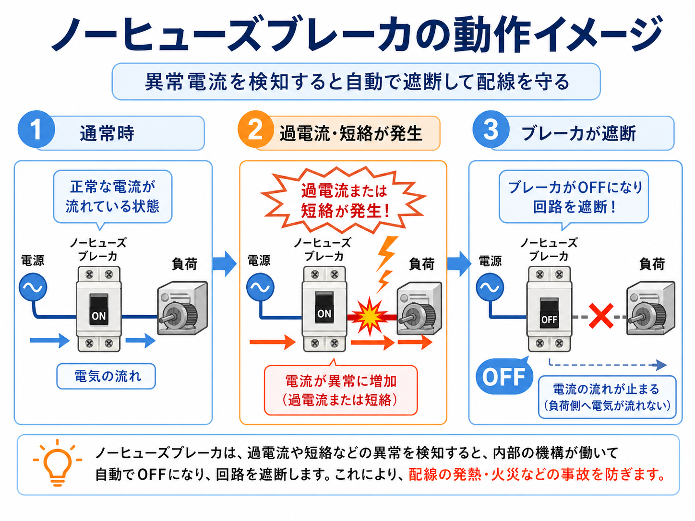
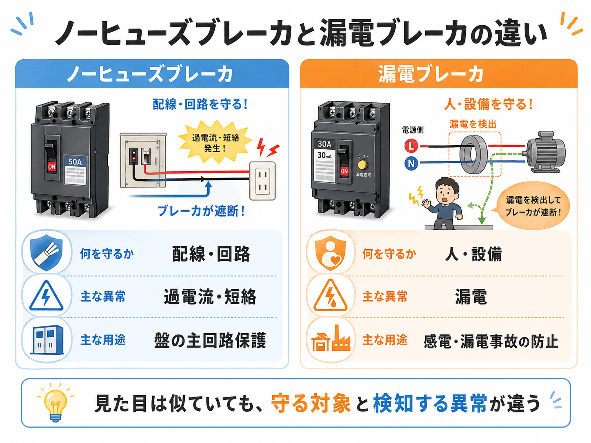

先に結論：ノーヒューズブレーカは「配線を守る入口の保護役」
ノーヒューズブレーカは、配線や回路に許容以上の電流が流れたときに、 自動で回路を遮断して被害の拡大を防ぐ保護機器です。
制御盤では、盤の入口側や主回路側に使われることが多く、 盤内の回路や配線をまとめて守る役として見ます。

先輩 ノーヒューズブレーカは、ざっくり言うと配線や回路を異常電流から守る入口の保護役だよ。

新人 異常が起きたときにOFFになって、電気の流れを止めるブレーカですね。

先輩 そう。特に過電流や短絡を見ている、という点を押さえると分かりやすいね。
ノーヒューズブレーカとは？
ノーヒューズブレーカは、ヒューズを使わずに過電流や短絡を検知して回路を遮断するブレーカです。 現場では「NFB」と呼ばれることもあります。
主な役割は、配線や機器に異常な電流が流れたときに回路を切り、 配線の発熱や機器の損傷、事故の拡大を防ぐことです。

「盤の入口で配線を守る番人」と見ると分かりやすい
ノーヒューズブレーカは、盤内のすべての回路を安全に使うための入口側の保護役として見ると理解しやすいです。 異常時にすばやく遮断することで、被害が広がるのを防ぎます。
ノーヒューズブレーカの基本の動き
ノーヒューズブレーカの動きは、ざっくり言うと 通常時 → 過電流・短絡が発生 → ブレーカが遮断 という流れです。

1. 通常時
正常な電流が流れている状態では、ブレーカはONのまま電気を通します。
2. 過電流が流れる
負荷が大きすぎたり、回路に異常があると、許容以上の電流が流れます。
3. 短絡が起きる
ショートなどで大きな電流が急に流れると、ブレーカが遮断動作します。
4. 回路を遮断する
ブレーカがOFFになり、負荷側へ電気が流れない状態にします。
落ちた原因を確認してから復帰する
ブレーカが落ちたときは、ただ入れ直すのではなく、 負荷の異常、配線の短絡、容量オーバーなどを確認してから復帰します。
ノーヒューズブレーカと漏電ブレーカの違い
ノーヒューズブレーカと漏電ブレーカは、見た目が似ていることがあります。 ただし、守る対象と検知する異常が違います。

| 種類 | 主に守るもの | 検知する異常 | 現場での見方 |
|---|---|---|---|
| ノーヒューズブレーカ | 配線・回路 | 過電流・短絡 | 主回路や分岐回路を異常電流から守る |
| 漏電ブレーカ | 人・設備 | 漏電 | 感電や漏電事故を防ぐために使う |
新人 ノーヒューズブレーカは過電流や短絡、漏電ブレーカは漏電を見る、という分け方ですか？
先輩 そう。見た目が似ていても、何を守るためのブレーカかを分けて見ると混乱しにくいよ。
現場で見るときの注意点
ノーヒューズブレーカは、容量や用途に合ったものを選ぶことが大事です。 ただON/OFFを見るだけでなく、なぜ遮断したのかを確認する必要があります。
- ブレーカ容量が配線や負荷に合っているか
- 過電流で落ちたのか、短絡で落ちたのか
- 負荷側に異常な機器や配線不良がないか
- 端子のゆるみや発熱がないか
- 何度も同じブレーカが落ちていないか
原因確認なしで何度も入れ直さない
ブレーカが落ちるのは、回路のどこかに異常があるサインです。 原因を確認せずに何度も復帰させると、配線や機器を傷めるおそれがあります。
容量を大きくすれば解決、ではない
ブレーカがよく落ちるからといって、安易に容量を大きくするのは危険です。 配線サイズ、負荷、保護協調を確認したうえで判断します。
まとめ：ノーヒューズブレーカは配線・回路を守る基本部品
ノーヒューズブレーカは、過電流や短絡などの異常から配線・回路を守る保護機器です。 制御盤や分電盤では、入口側や分岐回路でよく使われます。
漏電ブレーカとは、守る対象と検知する異常が違います。 ノーヒューズブレーカは配線や回路、漏電ブレーカは人や設備を守るものとして整理すると分かりやすいです。